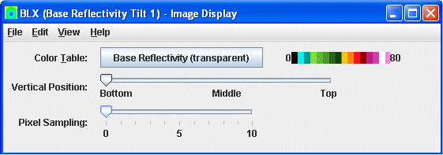
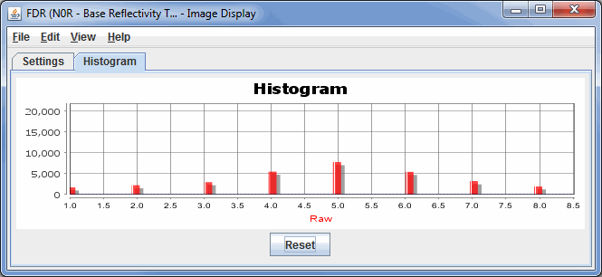

Overview
The controls for Level III Radar imagery are similar to the standard Image
Controls and are used to adjust image displays of this Radar imagery. The control window consists of two tabs: Settings and Histogram.
The Settings tab allows you to customize many aspects of the appearance of your display:

Image 1: Settings Tab of the WSR-88D Level III Controls Window
Properties
- Color Table - Shows the active color table and the associated high and low data values in the units of the display. As the mouse pointer is moved over the color bar, the value at a particular color is shown. Right click on the color bar or click on the button that displays the name of the Color Table to make modifications to the colorbar. This allows you to open the Color
Table Editor, change the range, select other color tables, etc.
- Vertical Position - Changes the vertical position of the Radar display with respect to other variables being displayed in the Main Display window. You can change this with the slider, or by entering a value in the box and pressing Enter.
- Pixel Sampling - Changes the resolution of the image. A larger number makes a lower resolution display.
- Texture Quality - Controls the texture quality of the display. A higher quality will provide more detail in the display, but it will take longer to render and use more memory.
- Contour - Opens the Contour Properties Editor to change how the contours appear in the Main Display window. This is an option for the Image Contours display type.
The Histogram tab allows you to visualize a histogram of your Radar data:

Image 2: Histogram tab of the WSR-88D Level III Controls Window
There are many ways that you can customize this histogram. If you right-click on the histogram and select Properties, you can get to a Plot Properties dialog which allows you to change many aesthetic properties of the histogram. You can also modify the display in the Main Display window through the Histogram tab. You can do this by left-clicking and dragging from left to right to zoom in over your desired range of data values. Once you are done zooming in, the display in the Main Display window will modify to use a color bar range that matches the boundaries of the zoom box you created in this tab. To return to the original data range, use the button.
Menus
Many of the menu items seen utilizing this display are standard options that can be found in the Menus section of the Layer Controls page. However, there is one option that is unique to this display.
The View menu has this unique option:
- Use Native Image Projection - Re-centers the display and resets the zoom level back to the display's initial settings without changing any other preferences you have modified.